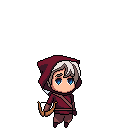
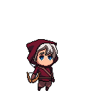

... there lived a little country girl,
the prettiest creature who was ever seen.
Her mother had a little red riding hood made for her.
Everybody called her Little Red Riding Hood.
One evening her mother said to her:
“Go my dear, and see how your grandmother is doing,
for I hear she has been very ill.”
Little Red Riding Hood set out immediately.
As she was going through the wood, the full moon enligthened her way.
If her mother had been aware of the full moon,
she would never let her daughter go through the forest.
Due to the full moon, the wolves out there no longer were just wolves...
... they got to turn into werewolves, murderous and bloodthirsty.
But Little Red Riding Hood wasn't helpless.
Grown up far away from civilization, she was used to bow-hunt,
and she spent most of her childhood outdoors,
what made her a strong and agile young lady.
Help Little Red Riding Hood reach her grandmother's house!